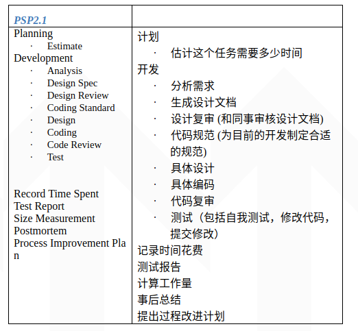

####1.简单题
#####软件工程定义
关于软件工程的定义，在GB/T11457-2006《信息技术 软件工程术语》中将其定义为”应用计算机科学理论和技术以及工程管理原则和方法，按预算和进度，实现满足用户要求的软件产品的定义、开发、和维护的工程或进行研究的学科”。
#####阅读经典名著”人月神话”等资料,解释software crisis, COCOMO模型
软件危机:
软件危机（英语：Software Crisis）是早期计算机科学的一个术语，是指在软件开发及维护的过程中所遇到的一系列严重问题，这些问题皆可能导致软件产品的寿命缩短、甚至夭折。软件开发是一项高难度、高风险的活动，由于它的高失败率，故有所谓“软件危机”之说。软件危机的本源是复杂、期望和改变。这个术语用来描述正急遽增加之电脑的力量带来的冲击和可能要处理的问题的复杂性。从本质上来说，它谈到了写出正确、可理解、可验证的计算机程序的困难。
COCOMO模型:
构造性成本模型（COCOMO，英文全称为Constructive Cost Model）是由巴里·勃姆（Barry Boehm）提出的一种软件成本估算方法。这种模型使用一种基本的回归分析公式，使用从项目历史和现状中的某些特征作为参数来进行计算。从本质上说是一种参数化的项目估算方法，参数建模是把项目的某些特征作为参数，通过建立一个数字模型预测项目成本
#####软件生命周期
#####按照SWEBok的KA划分,本课程关注那些KA或知识领域
（1）软件需求知识域
需求定义为解决真实世界问题而必须展示的特性。
第一个知识子域是软件需求基础，它包括软件需求本身的定义、主要的需求类型的定义，如产品与过程、功能与非功能、突发性（emergent）特性等。子域也描述了可量化需求的重要性，并区分了系统的和软件的需求。
第二个子域是需求过程，它介绍过程本身，面向余下的5个子域，说明需求工程如何与其它软件工程过程吻合。它描述了过程模型、过程参与者、过程支持与管理、过程质量与改进。
第三个子域是需求获取，它涉及软件需求来自何方？软件工程师如何收集这些需求，它包括需求来源和收集技术。
第四个子域是需求分析，涉及分析需求的过程：（1）检测和解决需求之间的冲突；（2）发现软件的边界，以及软件如何与外界交互；（3）详细描述系统需求和软件需求。需求分析包括需求分类、概念建模、体系结构设计与需求分配、需求协商。
第五个子域是需求规格说明，一般是指产生一份（电子）文档，这样可以系统地评审、评价和批准需求。对于复杂系统，特别是涉及大量非软件组件的系统，至少需要产生3类不同的文档：系统定义、系统需求规格说明、软件需求规格说明。子域描述了这3类文档，以及产生它们的活动。
第六个子域是需求确认，目标是在分配资源给需求之前，发现任何潜在的问题。需求确认涉及检查需求文档，以保证它们定义了正确的系统（即，这是用户期望的系统）。这个子域进一步划分为需求评审的引导、快速原型、模型确认和接收测试的描述。
第七个和最后一个子域是实际考虑，它描述在实践中需要理解的主题。第一个主题是需求过程的迭代本质，后面3个主题是关于处于实际反映了要建造或已经建造的软件的状态的需求的变更管理和维护。它包括变更管理、需求属性、需求追踪。最后一个的主题是需求度量。
（2）软件设计知识域
根据IEEE的定义，设计既是“定义一个系统或组件的体系结构、组件、接口和其它特征的过程”，又是“这个过程的结果”。软件设计的知识域分为6个子域。
第一个子域是软件设计基础，它是理解软件设计作用和范围的基础，这些是：一般的软件概念、软件设计上下文和软件设计的使能（enabling）技术。
第二个子域将软件设计的关键问题聚集在一起，它们包括：并发性、事件的控制和处理、组件的分布、错误和异常处理、容错、交互与表现、数据持久性。
第三个子域是软件结构与体系结构，它的主题是体系结构与视点、体系结构风格、设计模式、程序与构架族。
第四个子域描述软件设计质量的分析与评价。虽然有一个完整的软件质量知识域，这个子域描述与软件设计质量特别有关的主题。这些方面包括：质量属性、质量分析和评价技术与度量。
第五个子域是软件设计符号，它分为结构与行为描述两部分。最后一个子域是软件设计策略与方法。首先描述一般策略，然后是面向功能的设计方法、向对象的设计方法、以数据结构为中心的设计、基于组件的设计和其它方法。
（3）软件构造
软件构造指通过编码、验证、单元测试、集成测试和排错的组合，详细创建一个可以工作的、有意义的软件，其知识域分为3个子域。
第一个子域是软件构造的基础，前3个主题是：复杂性最小化、变更预见和为验证进行构造。最后一个主题讨论软件构造的标准。
第二个子域描述构造的管理，主题包括：构造的模型、构造的计划、构造的度量。
第三个子域覆盖实践考虑，主题包括：构造的设计、构造的语言、编码、构造的测试、复用、构造的质量和集成。
（4）软件测试
软件测试由在有限测试用例集合上，根据期望的行为，对程序的行为进行的动态验证组成，测试用例是从实际上是无限的执行域中适当的选择出来的。软件测试包括5个子域。
第一个子域是软件测试基础，首先介绍与测试有关的术语，然后描述测试的关键问题，最后是测试与其它活动的联系。
第二个子域是测试级别，这些是根据测试对象（target）和测试目标来划分的。
第三个子域是测试技术。第一个范畴包括基于测试人员直觉和经验的测试，第二组是基于规格说明的技术组成，然后是基于代码的技术、基于错误（fault）的技术、基于使用的技术和与应用本质有关的技术。最后讨论如何选择和组合适当的技术。
第四个子域是测试相关的度量，度量划分为：与被测试的程序的评价有关的度量、与测试本身的评价有关的度量。
最后一个子域是测试过程，包括了测试时的实际考虑和测试活动。
（5）软件维护
软件一旦投入运行，就可能出现异常，运行环境可能发生改变，用户回提出新的需求。生命周期的维护阶段从软件交付时开始，但维护活动出现得还要早。软件维护知识域划分为4个子域。
第一个子域是软件维护基础：定义和术语、维护的本质特征、维护的必要性、维护成本的大份额性、软件的进化、维护的分类。
第二个子域将软件维护中的关键问题聚集在一起，这些是：技术问题、管理问题、维护成本估算和软件维护度量。
第三个子域是维护过程，其中的主题包括各种维护过程和维护活动。
第四个子域是维护技术，包括程序的理解、再工程和逆向工程。
（6）软件配置管理
软件配置管理（Software ConfigurationManagement，SCM）是为了系统地控制配置的变更和维护配置在整个系统的生命周期中的完整性和可追踪性，而标识软件在时间上不同点的配置的学科。这个知识域包括6个子域。
第一个子域是SCM过程管理，包括的主题有：SCM的组织结构上下文、SCM的约束和指导、SCM计划、SCM计划本身和SCM的监管。
第二个子域是软件配置标识，它识别要控制的项目，为各个项目及其版本建立标识方案，确定在获取和管理被控制项目中要使用的工具和技术。子域中第一个主题是识别要控制的项目和软件库。
第三个子域是软件配置控制，它管理软件生命周期中的变更。其中的主题包括：（1）软件变更的请求、评价和批准；（2）实现软件变更；（3）偏离和放弃（deviation and waiver）。
第四个子域是软件配置状态簿记，其主题有软件配置状态信息和软件配置状态报告生成。
第五个子域是软件配置审计，包括：软件功能配置审计、软件物理配置审计、软件基线的过程内部（in-process）审计。最后一个子域是软件发布管理和交付，覆盖软件建造和软件发布管理。
（7）软件工程管理
软件工程管理知识域处理软件工程的管理与度量，虽然度量是所有知识域的一个重要方面，但在这里涉及的是度量程序的主题。软件工程管理6个子域，前5个覆盖软件工程管理，第六个描述软件度量的程序。
第一个子域是启动和范围定义，它由需求的确定与协商、可行性分析、需求的评审和修订过程组成。
第二个子域是软件工程计划，包括过程计划、确定可交付成果、工作量、进度与成本估算、资源分配、风险管理、质量管理、计划本身的管理。
第三个子域是软件项目实施，它的主题是：计划的实现、供应商合同管理、度量过程的实现、过程的监理、过程的控制、报告生成。
第四个主题是评审与评价，主题有：确定需求的满足程度、评审和评价项目性能。
第五个主题描述项目的关闭：确定关闭项目、关闭涉及的活动。
第六个子域描述软件工程度量，特别是度量本身的程序。产品和过程的度量在软件工程过程知识域中描述，许多其它知识域也描述其特定的度量。这个子域的主题包括：建立和维持度量工作、度量过程的计划、进行度量过程和评估度量。
（8）软件工程过程
软件工程过程的知识域涉及软件工程过程本身的定义、实现、评定、度量、管理、变更和改进。它分为4个子域。
第一个子域是过程实现与变更，其主题有：构成基础结构、软件过程管理周期、过程实现与变更的模型、实际考虑。
第二个子域处理多成定义，主题有：软件生命周期模型、软件生命周期过程、过程定义符号、过程适配（adaptation）和自动化。
第三个子域是过程评定，主题有：过程评定模型和过程评定方法。
第四个子域描述过程与产品度量。软件工程过程覆盖一般的产品度量，以及过程度量。特定于各知识域的度量在相关的知识域描述。子域的主题有：过程度量、软件产品度量、度量结果的质量、软件信息模型和过程度量技术。
（9）软件工程工具和方法
软件工程工具和方法知识域包括软件工程工具、软件工程方法。软件工程工具子域使用了与指南相同的结构，为其它9个软件工程知识域各分配一个主题，附加一个主题是其它工具问题，例如工具集成技术，这些问题可能应用于所有类型的工具。
软件工程方法子域分为3个小节：处理形式化途径的启发式方法、处理基于数学的途径的形式化方法、处理基于各种原型的软件开发途径的原型方法。
（10）软件质量
软件质量知识域处理跨越软件生命周期过程的软件质量的考虑，由于软件质量在软件工程中无处不在，其它知识域也涉及质量问题，读者可以注意到本知识域到其它知识域的指示器。本知识域覆盖3个子域。
第一个子域描述软件质量基础，例如软件工程文化和伦理学、质量的价值与成本、模型和质量特征和质量改进。
第二个子域覆盖软件质量管理过程，主题有：软件质量保证、验证和确认、评审和审计。
第三个即最后一个子域描述与软件质量有关的实际考虑，主题包括：软件质量需求、缺陷特征、软件质量管理技术、软件质量度量。
（11）软件工程相关学科
最后一章是软件工程相关学科。为确定软件工程的范围，有必要鉴别与软件工程有公共边界的学科，这一章按字母顺序，鉴别这些相关学科。对每个相关学科，使用我们找到的基于一致认可的来源，进行以下内容的鉴别：（1）资料性定义（可行时）；（2）知识域列表。相关学科包括：计算机工程、计算机科学、管理、数学、项目管理、质量管理、软件人类工程学、系统工程。
#####解释CMMI的五个级别,例如:Level 1-Initial:无序,自发生产模式
1． 初始级
软件过程是无序的，有时甚至是混乱的，对过程几乎没有定义，成功取决于个人努力。管理是反应式的。
2．可重复级
建立了基本的项目管理过程来跟踪费用、进度和功能特性。制定了必要的过程纪律，能重复早先类似应用项目取得的成功经验。
3． 已定义级
已将软件管理和工程两方面的过程文档化、标准化，并综合成该组织的标准软件过程。所有项目均使用经批准、剪裁的标准软件过程来开发和维护软件，软件产品的生产在整个软件过程是可见的。
4． 量化管理级
分析对软件过程和产品质量的详细度量数据，对软件过程和产品都有定量的理解与控制。管理有一个作出结论的客观依据，管理能够在定量的范围内预测性能。
5． 优化管理级
过程的量化反馈和先进的新思想、新技术促使过程持续不断改进。
#####用自己的语言简述SWEBok或CMMI
SWEBok描述了软件工程一些实践所需要的知识领域,应该是软件工程的教育基础.可以帮助（1）促进世界范围内对软件工程的一致观点；（2）阐明软件工程相对其它学科（如计算机科学、项目管理、计算机工程和数学等）的位置，并确立它们的分界；（3）刻画软件工程学科的内容；（4）提供使用知识体系的主题；（5）为开发课程表和个人认证与许可材料，提供一个基础。
####2.解释PSP各项指标及技能要求
#####阅读<<现代软件工程>>的PSP:Personal Software Process章节
http://www.cnblogs.com/xinz/archive/2011/11/27/2265425.html
#####按表格PSP2.1,了解一个软件工程师在接到一个任务之后要做什么,需要哪些技能,解释你打算如何统计每项数据?

要做什么如图所示
需要的技能:
- 知识: 对具体技术的掌握, 动手能力
例如: 对Java, C/C++/C#, 诊断/提高效能的技术, 对device driver, kernel debugger 的掌握；对于某一开发平台的掌握。 - 经验: 对问题领域的知识和经验的积累 (例如: 对于医疗行业的了解, 对于金融行业的了解)。
第一点和第二点都可以在很多简历上看到, 也可以比较容易地检测出来。随着经验的增长, 一个工程师可以掌握更广泛，更深入的技术和问题领域的知识。
通用的软件设计思想, 软件工程思想的提高
这一方面就比较虚，什么是好的软件设计思想, 什么是好的软件工程思想? 一个工程师开了博客, 转发了很多别人的文章, 这算有思想么? 另一个工程师坚持任何设计都要画 UML 图, 这算有思想么? 我个人比较重视一个程序员原创的博客, 在面试的时候, 我们别空口吹思想, 一起来看看你写的原创博客吧。职业技能 (区别于技术技能)
职业技能包括: 自我管理的能力; 表达和交流的能力; 与人合作的能力; 把任务按质按量完成的执行力; 这些能力在IT 行业和其它行业都很重要。
如何统计每项数据:
a) 项目/任务有多大？
说明项目的大小, 一般用代码行数 (Line Of Code, LOC) 来表示；也可以用功能点 (function point). 一个重要的指标是: 你在实际产品中写了多少代码, 不包括空行/注释行/单字符行 .
b) 花了多少时间?
可以用小时, 天，月，年来表示。一组人所花费的时间可以用 (人数*时间) 来表示，例如某项目花费了10个人·月。
c) 质量如何?
交付的代码中有多少缺陷? 交付有两个定义,
· 在 Code Complete “代码完成” 的时候, 交付给测试人员
· 交付到顾客那里去 (在软件交付的时候)。
可以用缺陷的数量来除以项目的大小。 例如 5 bugs / KLOC， 意味着每千行程序有5个缺陷。
d) 是否按时交付